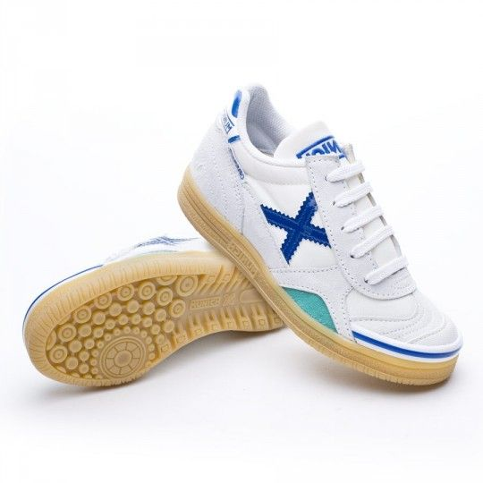

Футзалки Munich X Gresca

Описание товара: Футзалки Munich X Gresca
Производитель: Munich X
Тип: Обувь для мини-футбола
Сезон: Игра в зале
Подробное описание товара:
Наиболее используемая модель для футзала. В этой модели используется нейлоновая сеточка, которая дает кедам хорошую вентиляцию и комфорт. Интерьер обуви производится с небольшой подкладкой, что делает их более удобными. Резиновая подошва состоит из двух различных плотностей, что обеспечивает удобную поддержку голеностопа и препятствует износу обуви.
Характеристики товара:
| Материал: | кожа | ткань | |||||||
| Цвет: | белый | синий | |||||||
| Размеры: | 36 | 37 | 38 | 39 | 40 | 41 | 42 | 43 | 44 |
| Подошва: | 75% Резина | 20% EVA | 5% PVC | ||||||
| Подкладка: | 100% текстиль | ||||||||
| Верхняя: | 45% кожа | 5% синтетика | 50% Ткань | ||||||